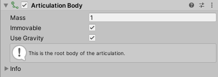
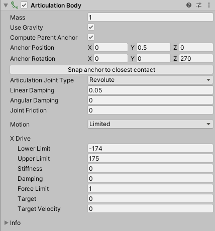
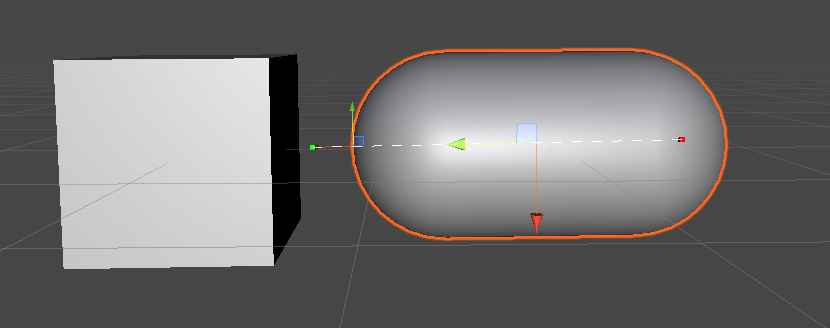
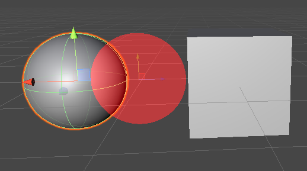
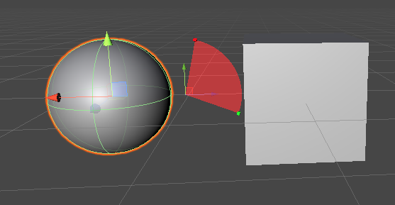
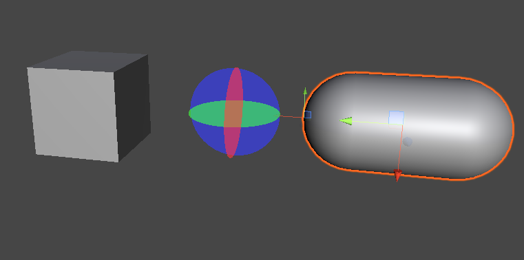
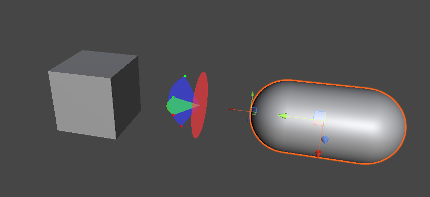

接合体
通过接合体可以使用分层组织的游戏对象构建物理接合，例如机器人手臂或运动链。它们可帮助在针对工业应用程序的模拟环境中获得逼真的物理行为。
属性
接合体可用于在单一组件中定义属性，而这些属性在经典配置中会通过刚体和常规关节以类似方法进行定义。也就是说，这些属性取决于层级视图中的游戏对象位置：
- 对于接合的根游戏对象，只能设置物理体属性：

- 对于接合内的任何子游戏对象，可以设置物理体属性以及将此游戏对象链接到其父游戏对象的关节的类型和属性：

接合体属性分为以下主要类别：
物理体属性
定义接合体响应物理环境的方式。
| 属性 | 功能 |
|---|---|
| Mass | 接合体的质量（默认为千克）。 |
| Immovable | 使用此属性可定义此接合体是否可移动。只能为根接合体设置此属性。例如，此属性可用于使机器人双手的基体不可移动。物理引擎将它与所有其他约束分开解决，保证不会违反它。 |
| Use Gravity | 使用此属性可使重力影响或不影响此接合体。 |
关节锚点属性
为接合体及其父接合体定义关节锚点的坐标。

| 属性 | 功能 |
|---|---|
| Compute Parent Anchor | 启用此属性可使父相关锚点与当前接合体的锚点匹配。如果禁用此属性，则可以为 Parent Anchor Position 和 Parent Anchor Rotation 单独设置值。 |
| Anchor Position | 锚点相对于当前接合体的位置坐标。 |
| Anchor Rotation | 锚点相对于当前接合体的旋转坐标。 |
| Parent Anchor Position | 父锚点相对于父接合体的位置坐标。仅当禁用 Compute Parent Anchor 时，此属性才会出现。 |
| Parent Anchor Rotation | 父锚点相对于父接合体的旋转坐标。仅当禁用 Compute Parent Anchor 时，此属性才会出现。 |
| Snap Anchor to closest contact | 计算此接合体表面上最接近父接合体质心的点，并将锚点设置到它。如果启用了 Compute Parent Anchor，则 Unity 也会相应地更新父锚点。 |
关节类型选择和关节属性
选择将当前接合体链接到其父接合体的关节类型，并定义其通用和特定属性。
| 属性 | 功能 | |
|---|---|---|
| Articulation Joint Type | 将此接合体连接到其父接合体的关节类型。注意：所有类型的关节都共有此表介绍的属性，其中一些类型具有特定的附加属性。 | |
| Fixed | 在物理体之间设置刚性、牢不可破和不可拉伸的链接。除了此表中介绍的属性外，固定结合关节没有附加属性。 | |
| Prismatic | 阻止除了沿特定轴滑动之外的所有运动。另请参阅棱形关节附加属性。 | |
| Revolute | 允许绕特定轴旋转（如铰链）。另请参阅旋转关节附加属性。 | |
| Spherical | 解剖关节，允许两次摆动和一次扭转。另请参阅球形关节附加属性。 | |
| Linear Damping | 控制线性减速的系数。 | |
| Angular Damping | 控制旋转减速的系数。 | |
| Joint Friction | 控制关节中由摩擦引起的能量损失的系数。 |
棱形关节附加属性
| 属性 | 功能 | |
|---|---|---|
| Axis | 指定棱形关节允许相对于父锚点沿之运动的轴。 | |
| Motion | 指定沿该轴的运动限制类型。 | |
| Free | 允许接合体沿着父锚点的所选轴自由移动。 | |
| 受限 | 按照在 Drive 属性中指定的 Lower Limit 和 Upper Limit，限制结合体沿父锚点的所选轴的移动。 | |
| X Drive、Y Drive 或 Z Drive | 按照父锚点的所选轴，附加到关节的线性驱动属性。主要：此处只有一个 Drive 部分。其标题会根据轴选择自动调整。 |
旋转关节附加属性

| 属性 | 功能 | |
|---|---|---|
| Motion | 指定围绕父锚点 X 轴的旋转限制类型。 | |
| Free | 允许接合体围绕父锚点 X 轴自由旋转。 | |
| 受限 | 按照在 X Drive 属性中指定的 Lower Limit 和 Upper Limit，限制结合体围绕父锚点 X 轴的旋转。 | |
| X Drive | 围绕父锚点 X 轴，附加到关节的旋转驱动属性。 |
球形关节附加属性
| 属性 | 功能 | |
|---|---|---|
| Swing Y | 指定围绕 Y 轴的旋转限制类型。 | |
| Free | 允许接合体围绕父锚点 Y 轴自由旋转。 | |
| 受限 | 按照在 Y Drive 属性中指定的 Lower Limit 和 Upper Limit，限制结合体围绕父锚点 Y 轴的旋转。 | |
| Locked | 完全锁定接合体围绕父锚点 Y 轴的旋转。注意：不能同时锁定两个以上的自由度。 | |
| Swing Z | 指定围绕 Z 轴的旋转限制类型。所有 3 个轴的选项都相同。 | |
| Twist | 指定围绕 X 轴的旋转限制类型。所有 3 个轴的选项都相同。 | |
| Y Drive、Z Drive 和 X Drive | 分别围绕父锚点 Y、Z 和 X 轴，附加到关节的旋转驱动属性。注意：每个驱动都有一个单独的细分部分。如果锁定某个轴，则 Inspector 不会显示其驱动属性。 |
关节驱动属性
| 属性 | 功能 |
|---|---|
| Lower Limit | 关节阻止接合体的移动或旋转的下限，具体取决于关节类型。仅当将相关 Motion、Swing 或 Twist 属性设置为 Limited 时，才能定义此属性。 |
| Upper Limit | 关节阻止接合体移动或旋转的上限，具体取决于关节类型。仅当将相关 Motion、Swing 或 Twist 属性设置为 Limited 时，才能定义此属性。 |
| Stiffness | 将关节吸引到目标的弹簧的刚度。 |
| Damping | 将关节吸引到目标的弹簧的阻尼。 |
| Force limit | 此驱动可以产生的力或扭矩的最大量。 |
| Target | 此驱动旨在达到的目标值。 |
| Target velocity | 此驱动旨在达到的目标速度。 |
配置接合关节
关节驱动效果
任何驱动都是隐式 1D 弹簧，旨在通过应用由以下公式计算的效果（力或扭矩）使当前驱动参数达到目标：
效果 = 刚度 * (drivePosition - targetPosition) - 阻尼 * (driveVelocity - targetVelocity)
附加到线性自由度的驱动会产生力。附加到旋转自由度的驱动会产生扭矩。可以通过关节驱动属性设置此公式的每个参数，以便为关节中涉及的任何轴微调所需效果。
请注意，效果公式由两个独立的项组成，可以平衡甚至抵消它们。例如：
如果将刚度设置为零，则会获得只是旨在达到特定速度的驱动。
如果将阻尼设置为零，则会获得旨在达到特定位置而不尝试达到任何特定速度的驱动。在这种情况下，达到目标后，驱动不会尝试最终停止。
关节锚点
每个关节有两个锚点：
锚点，相对于当前接合体
父锚点，相对于父接合体
默认情况下，Unity 会自动计算父锚点以匹配锚点的姿势。但是，可以禁用 Compute Parent Anchor 属性以手动设置父锚点：
当前，Unity 编辑器使用缩放变换组件工具显示锚点，以将它们与游戏对象变换组件工具区分开来：
若要更改锚点的位置，可以使用 Inspector 并编辑关节锚点属性，或者在 Scene 视图中直接移动和旋转其变换组件工具。
注意：创建新的接合体时，Unity 会将锚点定位在各自体的局部零点处。但是，如果所连接体附加了碰撞体，则局部零不是锚点的理想默认位置，因为关节可能会尝试使各个体相互推动。Snap Anchor to closest contact 按钮可帮助设置更合理的锚点默认位置，适用于许多接合。
关节自由度和限制
注意：当前，Scene 视图可用于可视化关节限制，但不能以图形方式操作它们。
固定关节
固定关节没有自由度，因此 Scene 视图不显示任何特定标记。
棱形关节
棱形关节实际上是相对于父锚点沿着指定轴移动的滑动条。此轴只能是基础轴（X、Y 或 Z），但是仍然可以旋转父锚点以在世界空间中获得不同的轴方向。
可以设置棱形关节以进行自由或有限的移动。为此，请使用 Inspector 并编辑棱形关节特定属性。
注意：不能锁定棱形关节，否则这会只移除其自由度并使其成为退化关节。
将棱形关节从 Motion 设置为 Limited 时，Scene 视图会显示标记以表示移动限制：
红色小标记代表下限。
绿色小标记代表上限。
白色虚线表示限制之间的允许移动。
若要操作关节限制，必须使用 Inspector 并在关节驱动属性中编辑其值。

有限棱形关节的示例。
注意：将棱形关节 Motion 设置为 Free 时，Scene 视图不显示任何特定标记。
旋转关节
旋转关节本质上是具有围绕父锚点 X 轴的单一旋转自由度的铰链。仍可以旋转父锚点以在世界空间中获得不同的轴方向。
可以设置旋转关节以进行自由或有限的旋转。为此，请使用 Inspector 并编辑旋转关节特定属性。
注意：不能锁定旋转关节，否则这会只移除其自由度并使其成为退化关节。
将旋转关节 Motion 设置为 Free 时，Scene 视图会显示红色圆盘以表示围绕 X 轴所允许的自由旋转。

自由旋转关节的示例。
将旋转关节从 Motion 设置为 Limited 时，Scene 视图会显示标记以表示旋转限制：
红色小标记代表下限。
绿色小标记代表上限。
红色扇形表示限制之间允许的旋转角度。
父锚点 Z 轴用作两个限制角度的参考（零）。
若要操作关节限制，必须使用 Inspector 并在关节驱动属性中编辑其值。

有限旋转关节的示例。
球形关节
球形关节是最适合模拟人形角色肢体的解剖关节。
此关节类型最多可以具有三个旋转自由度。可以将所有这些属性设置为自由、有限或锁定。为此，请使用 Inspector 并编辑旋转关节特定属性。
注意：不能同时锁定球形关节的所有旋转，否则这会移除其所有自由度并使其成为退化关节。此外，不应锁定两个摆动轴来模拟旋转关节，因为模拟的发生方式与旋转关节不同，并且成本更高。
与旋转关节一样：
Scene 视图显示带有彩色圆盘的自由旋转和带有彩色扇形的有限旋转。每种颜色（红色、绿色、蓝色）表示围绕具有此颜色的轴（分别为：X、Y、Z）的旋转。
红色和绿色小标记分别表示下限和上限。

自由球形关节的示例。

摆动有限的球形关节示例。